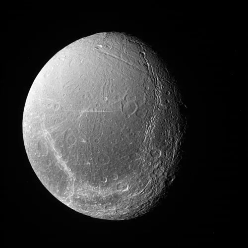

Dione - Lua de Saturno

Introdução e História
Dione é uma das luas de Saturno, descoberta em 1684 pelo astrônomo italiano Giovanni Domenico Cassini. Ela é a quarta maior lua do planeta e possui uma superfície gelada relativamente antiga e complexa, com muitas crateras de impacto e regiões com terrenos fraturados.
Dione foi observada pela primeira vez de perto pela sonda Voyager 1 em 1980, mas as informações mais detalhadas vieram da missão Cassini, que realizou múltiplos sobrevoos da lua ao longo dos anos 2000 e 2010.
Características Físicas: Diâmetro, Massa e Órbita
Dione tem cerca de 1.123 km de diâmetro, o que a torna uma das maiores luas geladas de Saturno.
Ela orbita Saturno em aproximadamente 2,74 dias terrestres, sempre com o mesmo lado voltado para o planeta, em um movimento conhecido como rotação síncrona.
A densidade de Dione indica uma composição misturada de gelo de água e materiais rochosos, semelhante a outras luas geladas de Saturno.
Geologia
A superfície de Dione é fortemente craterada, com grandes áreas de terreno antigo agravadas por impactos ao longo de bilhões de anos.
Além das crateras, a lua apresenta “terreno wispy” — faixas brilhantes e finas causadas por fraturas e penhascos de gelo que cortam as planícies mais antigas. Essas formações sugerem que Dione passou por atividade tectônica no passado.
Estudos recentes indicam que Dione pode abrigar um oceano subterrâneo de água sob sua crosta de gelo, tornando-a um dos chamados “mundos oceânicos”.
Missões Espaciais
Dione foi estudada principalmente por sondas que visitaram o sistema de Saturno, sendo uma das luas observadas de perto pelas missões Voyager 1 e 2. Essas missões forneceram as primeiras imagens detalhadas da superfície, revelando crateras, fraturas e regiões brilhantes de gelo.
Posteriormente, a missão Cassini realizou observações prolongadas de Saturno e suas luas, incluindo Dione. Cassini forneceu informações sobre sua composição, analisou a estrutura das fraturas lineares e estudou interações com o campo magnético de Saturno.
Essas missões ajudaram a entender melhor a história geológica de Dione, seus possíveis processos internos e a dinâmica de suas superfícies geladas. Futuras missões ainda poderão aprofundar o conhecimento sobre sua composição e potencial para fenômenos criovolcânicos.
Atmosfera e Exosfera
Dione não possui uma atmosfera densa como a Terra. Em vez disso, mede-se uma exosfera extremamente tênue composta principalmente por íons de oxigênio, resultado da interação da superfície gelada com partículas energéticas no espaço.
Essa exosfera é tão leve que as partículas escapam rapidamente para o espaço, não formando uma camada gasosa significativa.
Potencial de Habitabilidade
- Água Líquida: A possibilidade de um oceano subterrâneo torna Dione mais interessante do que muitas outras luas de Saturno.
- Fonte de Energia: A energia disponível é limitada e depende de processos internos lentos.
- Ingredientes Químicos: A presença de gelo e materiais rochosos pode oferecer blocos básicos para química complexa.
Embora ainda não seja considerada um dos principais candidatos à vida, a possível presença de um oceano interno faz de Dione um objeto intrigante para estudos futuros de habitabilidade.
Curiosidades
Dione tem dois satélites co-orbitais em seus pontos lagrangianos, chamados Helene e Polydeuces, que acompanham sua trajetória ao redor de Saturno.
“Terreno wispy”, observado pela Cassini, é uma das características mais marcantes de sua superfície.
A interação gravitacional entre Dione, Mimas e Encelado contribui para manter as órbitas desses satélites em ressonância estável.
Origem do Nome
Dione recebeu seu nome da mitologia grega, inspirado na titânide Dione, que na tradição clássica era associada a divindades da fertilidade e, em algumas versões, considerada mãe de Afrodite.
O nome segue a tradição de nomear as luas de Saturno com personagens ligadas à mitologia clássica, conectando a exploração astronômica às histórias humanas antigas.
Referências
- NASA. Dione – Moon of Saturn. Disponível em: https://science.nasa.gov/saturn/moons/dione/ . Acesso em: 26 dez. 2025.
- Wikipedia. Dione (satélite). Disponível em: https://pt.wikipedia.org/wiki/Dione_(sat%C3%A9lite) . Acesso em: 26 dez. 2025.